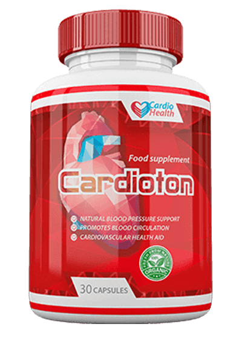

लेख • गोल्डन फंड • इंटरव्यू
सूजन, दर्द और मांसपेशियों में अकड़न: "चोक" हो चुकी नसों के 3 वफ़ादार साथी। इनसे घर बैठे कैसे राहत पाएँ?
कौन है कॉलेस्ट्रोल और थ्रोम्बी का जानी दुश्मन और खून की नसों का सबसे वफ़ादार साथी?
क्या शाम को आपके पैरों में सूजन आ जाती है? क्या आपके पैरों के तलवे सूज गए हैं, पैर फूले रहते हैं और आपकी एड़ियों पर निशान आ गए हैं? इसका अर्थ है कि आपको वैस्क्यूलर एडिमा है - इसमें कमजोर और चोक हो चुकी रक्त की धमनियों के चारों ओर रहने वाला तरल पदार्थ उनके अंदर प्रवेश कर जाता है। एडिमा से मांसपेशियों में दर्द होता है और वे अकड़ जाती हैं - यह रक्त के प्रवाह में बाधा पड़ने के कारण होता है।
यह सब जानते हैं कि रक्त की धमनियों के कॉलेस्ट्रोल से चोक हो जाने के कारण ही लकवा और हार्ट अटैक की बीमारी होती है। ये सभी हृदय रोग हैं। लेकिन बहुत ही कम लोग यह जानते हैं कि समस्या इससे कहीं गहरी होती है। "चोक हो चुकी" नसें 10 में से 9 ऐसी लंबी पकड़ लेने वाली बीमारियों की जड़ होती हैं जिन्हें लाइलाज समझा जाता है।
सरदर्द, ब्लड प्रेशर ऊपर-नीचे होना। आपके जोड़ों में दर्द होता है और आप अपनी गर्दन या जोड़ों को बड़ी मुश्किल से ही घुमा पाते हैं। शाम को आपके पैरों में सूजन आ जाती है और सुबह आपका चेहरा फूल जाता है। आपको कानों में घंटियों की आवाज सुनाई देती है। आपकी उंगलियां सुन्न सी महसूस होती है और हाथ और पैर ठंडे लगते हैं। आपकी नज़र का पैनापन कम हो जाता है। मेमोरी भी खराब होने लगती है। आपके पास किसी भी चीज के लिए ऊर्जा नहीं बचती। कई लोग कहते हैं कि यह सब तो बुढ़ापे की निशानी होते हैं लेकिन यह बात सच नहीं है।
- रक्त की धमनियाँ आपके 90% स्वास्थ्य के लिए जिम्मेदार क्यों होती हैं?
- कॉलेस्ट्रोल के अलावा रक्त की धमनियों की दीवारों पर और क्या जमा होता है?
- अस्वस्थ रक्त की धमनियों के चार प्रत्यक्ष और सात छिपे हुए लक्षण
- क्या आप धमनियों को घर पर ही साफ कर सकते हैं?
हमें इन प्रश्नों के उत्तर यूनिवर्सिटी ऑफ मेडिसन एंड फार्मेसी, मुंबई में वैस्कुलर सर्जरी के हेड ऑफ द डिपार्टमेंट, प्रोफेसर, न्यूरो सर्जन, डॉक्टर प्रसाद अय्यर जी ने दिए।
श्री अय्यर ने दिमाग की हजारों ओपन सर्जरी की हैं। उनका सबसे कम उम्र का पेशेंट सिर्फ 2 दिन का था।
श्री अय्यर के पास जटिल प्रक्रियाओं को भी आसान शब्दों में समझाने का हुनर है। उन्होंने मेडिकल साइंस से अनभिज्ञ लोगों के लिए 47 किताबें और स्टडी गाइड लिखी हैं। उन्हें इस बात पर कोई संदेह नहीं है कि रक्त की धमनियाँ ही हमारे 90% स्वास्थ्य के लिए जिम्मेदार होती हैं, हमारा स्वास्थ्य और जिजीविषा इस बात पर निर्भर करती है कि ये कितनी साफ हैं।
रक्त की धमनियाँ हमारे 90% स्वास्थ्य के लिए क्यों जिम्मेदार होती हैं?
अय्यर जी आपने कई मौकों पर कहा है कि रक्त की धमनियाँ ही मानव शरीर के 90% स्वास्थ्य के लिए जिम्मेदार होती हैं। ऐसा क्यों है?
मानव शरीर का सबसे बड़ा आंतरिक अंग कौन सा है? बहुत कम ही लोग इसका उत्तर जानते हैं। यहां तक कि जिन लोगों ने मेडिकल साइंस की पढ़ाई की है वे भी इसका गलत जवाब देते हैं। ये दिमाग या लिवर का नाम लेते हैं। अधिक जानकार लोग कहते हैं कि यह हमारी त्वचा है। वास्तव में सबसे बड़ा अंग हमारा वैस्कुलर सिस्टम है।
हम 1 आदमी की धमनियों को
पूरी पृथ्वी को 2.5 बार लपेट सकते हैं।
जरा कल्पना कीजिए। यदि हमने किसी आदमी के शरीर से सभी धमनियाँ अलग करके उन्हें एक दूसरे से जोड़ दिया तो हमें एक ऐसी रस्सी मिलेगी जो करीब एक लाख किलोमीटर लंबाई की होगी।
आसान शब्दों में कहें तो- भूमध्य रेखा की लंबाई 40 हजार किलोमीटर है। इसलिए, एक आदमी की धमनियों से बनी रस्सी से हम पृथ्वी को 2.5 बार लपेट सकते हैं।
आप इस संख्या के बारे में क्या सोचते हैं?
धमनियाँं केवल ऐसी नालियाँ भर नहीं है जिनमें रक्त बहता है। यह बहुत ही अनोखा और जटिल अंग है और इसमें कोई भी विकार होने से तुरंत बीमारी के लक्षण उभरने लगते हैं।
पैरों की नसों का चोक हो जाना - वेरीकोज नसें, सूजन, पैरों में भारीपन, पैर जाम हो जाना या - तलवों में बहुत जलन होना। एढ़ियाँ फट जाना। रक्त प्रवाह में बाधा - बैक्टीरिया से कोई बचाव नहीं होता, मायकोसिस होने लगती है। नाखून मोटे होने लगते हैं और चमड़ी के अंदर बढ़ने लगते हैं।
लीवर को रक्त की सप्लाई करने वाली धमनियाँं कमजोर हो जाती हैं - हैपेटिक स्टीटोसिस। आप जैसे ही कोई वसा वाले खाने खाते हैं तो मुंह में कड़वा स्वाद आने लगता है।
जोड़ों की धमनियाँ कमजोर हो जाती हैं और चोक होने लगती हैं - जोड़ों की हड्डियां सूख जाती हैं। जोड़ों में दर्द करने लगता है और आपको ओस्टियोनकोंड्रोसिस, हर्निया हो जाते हैं।
हाथों की नसों की लचक चली जाती है - हेमरॉयडल गांठे उभरने लगती हैं।
आंखों की नसें - नज़र खराब होने लगती है और मोतियाबिंद आने लगता है। आंखें लाल रहती हैं और हम समझते हैं कि यह थकान के कारण हो रहा है जबकि इसके पीछे होता है माइक्रोहेमरेज, इसमें आंखों के पीछे की छोटी-छोटी नसें फट जाती हैं।
मस्तिष्क में रक्त प्रवाह में बाधा - चक्कर आना, कान में आवाज सुनाई देना और मेमोरी चली जाना। क्या आपके साथ भी ऐसा होता है कि आप किचन में कुछ लेने जाते हैं और याद ही नहीं रहता कि किस लिए आए थे? या फिर आपको कभी शब्द याद ही नहीं आते। ये सब इसके लक्षण है कि दिमाग की नसें खराब होने लगी है।
और हाई ब्लड प्रेशर भी इस लिस्ट में जुड़ जाता है। हाई ब्लड प्रेशर ही लकवे का कारण होता है और हार्ट अटैक लाने में भी इसका योगदान होता है।
रक्त की धमनियाँ हमारी पावर सप्लाई हैं, हमारी जिंदगी इनमें ही बहती है। यदि यह महत्वपूर्ण रास्ता बंद हो जाता है तो जिंदगी भी बंद हो जाती है।
"चोक हो चुकी नालियाँ" - सभी अंगों की भूख।
मोटापे का रक्त की धमनियों से सीधा नाता है। कॉलेस्ट्रोल से चोक हो चुकी धमनियों से अंग भूखे रह जाते हैं, उन तक पोषक पदार्थों की आवश्यक मात्रा नहीं पहुंच पाती। दिमाग शरीर में यह संदेश भेजता है कि "आपको खाना खाना है"। और आदमी खाना खाने लगता है। लेकिन शरीर के अंगों को फिर भी उचित मात्रा में पोषक पदार्थ नहीं मिलते क्योंकि आपकी धमनियाँं तो चोक हो चुकी होती हैं। दिमाग फिर से यही सिग्नल भेजता है कि आपको खाना खाना है और यह चीज बार-बार ऐसे ही होती जाती है।
और इसी कारण कई लोगों को हमेशा कुछ ना कुछ खाने की इच्छा होती रहती है, आपको मिठाई या तली चीजों की भूख भी यहीं से आती है - शरीर कैलोरी मांगने लगता है।
जब मेरे साथ के डॉक्टर मरीजों को समझाते हैं: "आपका हाई ब्लड प्रेशर मोटापे के कारण है", तो लोग समझ ही नहीं पाते कि आखिर रोग की जड़ क्या है। हाई ब्लड प्रेशर मोटापे के कारण नहीं होता है, मोटापा हाई ब्लड प्रेशर के कारण होता है।
कहावत है "स्वास्थ्य अच्छा तो सब अच्छा", और इसमें यह भी जोड़ा जा सकता है कि: "साफ धमनियों के बिना अच्छा स्वास्थ्य असंभव है।"
इसलिए मैं लगातार यही कहता हूँ: यदि आपको सामान्य जीवन चाहिए तो आपको अपनी धमनियाँ साफ और स्वस्थ बनाना ही होगा। साफ धमनियों से आप 90% लंबी बीमारियों से बच सकते हैं, जिनमें से अधिकतर को "लाइलाज" माना जाता है।
कॉलेस्ट्रोल के अलावा धमनियों को क्या चोक करता है?
हम सब जानते हैं कि कॉलेस्ट्रोल कितना खतरनाक होता है। ये धमनियों को चोक कर देता है, उन्हें संकरा कर देता है और रक्त प्रवाह को बाधित करता है। लेकिन ये सिर्फ कॉलेस्ट्रोल के कारण नहीं होता है।
6.1 किग्रा
- 50 की उम्र तक धमनियों में जम चुके अपशिष्ट पदार्थों का कुल वजन।
यह सच है। धमनियों के अपशिष्ट में 65-70% कॉलेस्ट्रोल या "एथेरोस्क्लेरोटीक प्लाक़" ही होते हैं।
50 की उम्र तक, शरीर की नसों में 5 किलो तक कॉलेस्ट्रोल की पपड़ी जम जाती है। कॉलेस्ट्रोल के जमने से नसों की दीवार 4-5 गुना संकरी हो जाती है।
जरा सोचिए। यदि नस के अंदर का व्यास एक उंगली के बराबर हो तो 5 किलो कॉलेस्ट्रोल की पपड़ी उसे 4 माचिस की तीलियो के बराबर जगह जितना संकरा कर देती है।
ये पपड़ी जान के लिए खतरा नहीं होतीं। ज़िंदगी की गुणवत्ता खराब होने लगती है, ब्लड प्रेशर बढ़ जाता है, सरदर्द, पीठ में दर्द, कमजोरी और चिड़चिड़ापन आने लगते हैं। नसों में जमने वाले थ्रोम्बी के थक्के इससे कहीं ज़्यादा खतरनाक होते हैं।
नसों में जम चुके थ्रोम्बी का वजन काफी कम होता है, "केवल" 800 ग्राम - 1 किलो तक। लेकिन इनकी सबसे खतरनाक चीज होती है इनकी अस्थिरता। ये थ्रोम्बस (रक्त के थक्के) कभी भी टूट सकते हैं और फिर ये कहर ढा देते हैं।
एक बड़ा रक्त का थक्का रक्त की धमनी को पूरी तरह से चोक कर सकता है। इससे इस्कीमिया हो जाता है - अंग को इस धमनी से खून की आपूर्ति बंद हो जाती है।
इस्कीमिक स्ट्रोक - दिमाग की नस चोक हो जाना। हार्टअटैक - हृदय की नसों में रुकावट। लिवर का इस्कीमिया, फेंफड़े खराब हो जाना, किडनी पर ज़ोर पड़ना। बवासीर और कुछ नहीं गुदा का इस्कीमिया होते हैं। पैरों की छोटी नस में रुकावट से आगे चलकर नेक्रोसिस - या गैंगरीन हो जाता है।
नसों में कैल्सियम लवण - दवाओं और फूड सप्लिमेंट के रासायनिक अवशेष। 50 साल में शरीर में करीब 300-400 ग्राम कैल्शियम लवण जमा हो जाते हैं। कैल्सियम लवण की सबसे ज़्यादा मात्रा दिमाग की नसों में जमा होती है।
अपनी क्रिस्टल जैसी संरचना के कारण कैल्शियम लवण खतरनाक होते हैं। ये तुरंत धमनी को संकरा कर देते हैं जिससे वे अकड़ने लगती हैं। तनाव, शारीरिक मेहनत या मौसम के कारण कैल्शियम के पैने क्रिस्टल धमनियों की दीवार को तोड़ सकते हैं। दिमाग की नस के फट जाने को ही हेमोरेजिक स्ट्रोक कहते हैं।
अस्वस्थ धमनियों के चार प्रत्यक्ष और सात छिपे हुए लक्षण
ऐसे कौन से लक्षण हैं जो यह दर्शाते हैं कि हमारी धमनियाँ चोक हो गई हैं? जब आपका शरीर यह संदेश दे रहा हो कि " अपनी रक्त की धमनियों को तुरंत साफ करो!", तो इसे कैसे समझें?
यदि आप 45 से ऊपर के हैं और धमनियों को साफ करने के लिए आपने कभी भी न्यूट्रास्यूटिकल्स नहीं लिए हैं तो मैं गारंटी देता हूं कि आपको धमनियों में दिक्कत आने वाली है।
45
की उम्र ही वह पड़ाव है जिस पर धमनियों को साफ करना जरूरी होता है
धमनियों का कॉलेस्ट्रोल और रक्त के थक्के से चुप हो जाना एक प्राकृतिक प्रक्रिया है जो उम्र के बढ़ने के साथ होती ही है। आधुनिक जमाने का खाना, दवाएँ, धूम्रपान और शराब पीने से इनका जमना 5-8 गुना तेज हो जाता है। यह एक कड़वी सच्चाई है जिससे मुंह नहीं फेरा जा सकता।
धमनियों में अपशिष्ट जमने के मुख्य लक्षण
यदि आपको हाई ब्लड प्रेशर की शिकायत है तो इसे पढ़ना बंद कर दें क्योंकि यही धमनियों की बीमारियों का सबसे बड़ा लक्षण है।
क्या आपका ब्लड प्रेशर स्थिर नहीं रहता है? ब्लड प्रेशर दवाइयां लेने के बाद लगातार बढ़ा रहता है? यदि ऐसा है तो आपको यह जान लेना चाहिए कि आपकी धमनियों में केवल 30% खाली जगह बची है। बाकी की जगह में कॉलेस्ट्रोल की पपड़ी, रक्त के थक्के, थ्रोम्बी और कैल्शियम लवण जमा हो चुके हैं।
इसलिए, थोड़ा भी तनाव होने, मौसम में बदलाव होने, या मैग्नेटिक फील्ड के अत्यधिक बढ़ जाने के कारण भी आपके स्वास्थ्य पर बुरा प्रभाव पड़ सकता है। आपका ब्लड प्रेशर बढ़ जाता है और आपको ऐसा लगता है मानो सिर में हथौड़े चल रहे हो और जोड़ों में दर्द होने लगता है।
चोक हो चुकी धमनियों के कारण होने वाली चार बीमारियां:
- 1. हाई ब्लड प्रेशर बढ़ा हुआ ब्लड प्रेशर जिसे आप को दवा लेकर कम करना पड़ता है। यह इसका मुख्य लक्षण है। क्या आपको हाई ब्लड प्रेशर की शिकायत है? आपकी धमनियाँ सफाई का बेसब्री से इंतजार कर रही हैं!
- 2. वेरीकोज़ नसें पैरों पर बदसूरत और सूजी हुई नसें दिखना,भारीपन और दर्द होना,सूजन आ जाना। कॉलेस्ट्रोल और रक्त के थक्कों के टुकड़े नसों के वाल्व बंद कर देते हैं। त्वचा के ऊपर से धमनियों का "तारों" जैसा आकार दिखना शुरू हो जाता है जो समय के साथ एक पूरा "जाल" बन जाता है। वेरीकोज़ नसें ऐसे ही शुरू होती हैं।
- 3. हेमरॉयड्स गोदा में रक्त की नसों के चोक हो जाने के कारण हेमरॉयडल गठानों में दाह उत्पन्न होता है। रक्त की धमनियों में पपड़ी जम जाने के कारण फिशर भी होता है।
- 4. ऑस्टियोकॉन्ड्रिटिस जोड़ों में ठीक से रक्त का प्रवाह नहीं होना। इससे जोड़ कड़े हो जाते हैं और घिसने लगते हैं क्योंकि उन्हें वापस ठीक होने का समय ही नहीं मिलता। जोड़ वापस ठीक नहीं होते और सूख जाते हैं। इनका गद्दे जैसा प्रभाव कम पड़ जाता है। लवण बहते नहीं है और अनियंत्रित रूप से जमा होते चले जाते हैं।
7 छिपे हुए लक्षण:
- 1. एडिमा चोक हो चुकी नसें खून को पंप नहीं कर पाती हैं। नमक और पानी का मेटाबॉलिज्म खराब हो जाता है। शाम को पैरों में सूजन आ जाती है और एड़ियों पर मोजों के गहरे निशान पड़ जाते हैं। सूजा हुआ चेहरा, आंखों के नीचे सूजन। आप अपनी उंगलियों में से अंगूठी नहीं उतार पाते हैं। फूला हुआ पेट भी यही दर्शाता है कि आप के अंदरूनी अंगों में सूजन आ गई है।
- 2. कानों में आवाज आना कानों में हल्की से लेकर तेज आवाजें तक आ सकती हैं जिनसे आपको ध्यान केंद्रित करने में दिक्कत होती है। यह दिमाग की नसों में दबाव बढ़ जाने के कारण होता है जिससे कान के पर्दे दबने लगते हैं।
- 3. चक्कर आना ऐसा महसूस होना मानो नशा किया हो, कई बार अचानक सर घूमने लगना यही दर्शाता है कि धमनियों की प्रणाली भूख से परेशान है। इसके कारण कई बार सुनने की क्षमता कमजोर हो जाती है।
- 4. अनिद्रा आपको दिन भर नींद आती रहती है और ऊर्जा की कमी महसूस होती है, लेकिन आप आधी रात के पहले सो भी नहीं पाते? इसलिए होता है क्योंकि पीयूष ग्रंथि में पर्याप्त आपूर्ति नहीं हो पाती। ग्रंथि मेलाटोनिन बनाना बंद कर देती है - मेलाटोनिन ही नींद का हार्मोन होता है।
- 5. ऊर्जा में कमी आपको कमजोरी महसूस होती है। आपको कुछ भी करने की इच्छा नहीं होती। आपको बस ऐसा लगता है कि बिस्तर में पड़े रहो और खाते रहो। यह तब होता है जब शरीर ऊर्जा बचाने लगता है। चोक हो चुकी नसें अंगों के लिए आवश्यक भोजन का परिवहन नहीं करने देती जिससे शरीर अपनी क्रियाओं को धीमा कर देता है ताकि मृत्यु ना हो।
- 6. नज़र कमजोर होने लगना आंखों के सामने तारे दिखना, धब्बे नज़र आना, नज़र में धुंधलापन। आंखों की नसों में गड़बड़ियों के लक्षण
- 7. जोड़ों में दर्द मौसम के बदलने पर जोड़ों में दर्द होना। अच्छी नींद होने के बाद भी सुबह सोकर उठने पर आपको ऐसा लगता है मानो हाथ पर जम गए हो, एढ़ियों में दर्द होता है। आपको सुन्न पड़ चुके हाथ-पैर वापस ठीक करने में थोड़ा समय लगता है। ऐसा इसलिए होता है क्योंकि शरीर के सिनोवियल फ्लूड के गुणधर्म नष्ट हो जाते हैं।
क्या आपको भी इनमें से कोई लक्षण है? आपके जोड़ आपको बता रहे हैं कि उन्हें सफाई और भोजन की जरूरत है।
कई बार, लोगों को अलग-अलग तीव्रता में कई लक्षण एक साथ होते हैं। ऐसा भी होता है कि यह सारे लक्षण एक साथ दिख जाएं।
इससे परेशान लोग हर बीमारी को अलग-अलग ठीक करने की कोशिश करते हैं। हाई ब्लड प्रेशर की दवाइयां, वेरीकोज नसों के लिए क्रीमें, हेमरॉयड्स के लिए दवाएं, ओस्टियोकांड्रोसिस के लिए जैल। और, लगभग सभी लोग दर्दनाशक दवाएं तो लेते ही हैं...
ऐसे लोग सिर्फ दवा कंपनियों की जेब में ढेरों पैसे भरते हैं। लेकिन धमनियों की सभी बीमारियों का केवल एक ही कारण होता है - रुकावट। इलाज की शुरुआत यहीं से करनी चाहिए और सबसे पहले धमनियों की सफाई होनी चाहिए।
आपको अपनी धमनियों में से कोलेस्ट्रॉल, रक्त के थक्के और पपड़ी की सफाई करने के लिए क्या उपयोग करना चाहिए?
कृपया हमें प्रोफेशनल सलाह दें। जैसे: सुनीता ओसवाल, नागपुर, 57 वर्ष, शादीशुदा हैं, उनका वजन ज्यादा है, उन्हें ब्लड प्रेशर और वेरीकोज नसों की भी शिकायत है। जब भी मौसम बदलता है उनका शरीर भी मानो बैरोमीटर के हिसाब से बदलने लग जाता है - जोड़ों में दर्द, कमजोर और दिन भर नींद आना, सरदर्द।
हम सुनीता जी की मदद कैसे कर सकते हैं? सुनीता अपनी नसों की सफाई कैसे कर सकती हैं, वे डॉक्टर के पास जाकर यह फैसला भी नहीं सुनना चाहतीं कि: " आपको वजन कम करने की जरूरत है"," आपको दौड़ना होगा"," आपको अच्छा खाना खाना होगा", आपकी उम्र वैसे भी ज़्यादा...", आदि?
अधिकतर मेडिसिनल और फार्मास्यूटिकल प्रोडक्ट कोई असर नहीं करते हैं लेकिन आपका पैसा खर्च करवा कर आपको दिवालिया जरूर बना सकते हैं और इनकी लत भी लग जाती है।
दुर्भाग्य से भारत में डॉक्टर और अस्पताल ऐसे ही काम करते हैं। यह बात समझ में आती है कि आखिर क्यों मरीज़ डॉक्टरों के पास नहीं जाना चाहते। लेकिन सुनीता खुद ही मैनेज कर लेंगी।
मैं सिर्फ एक ऐसे प्रोडक्ट का नाम ले सकती हूं जो धमनियों की सुरक्षित रूप से सफाई कर सकता है - यह है न्यूट्रास्यूटिकल . से 11-17 साल उम्र बढ़ जाती है, ऊर्जा मिलती है और राहत का अहसास होता है, आपको दर्द और दिक्कतों से छुटकारा मिल जाता है और यह आप की ऊर्जा नहीं पी पाते।
इससे कोई नुकसान नहीं होता, क्योंकि यह एक हर्बल चाय है, यह धमनियों की ऑपरेशन द्वारा सफाई करने के बाद
पौधों के तत्वों का एक मिश्रण है, जो पानी के संपर्क में आने पर जीवित अणुओं को सक्रिय कर देता है। इनसे धमनियों का कोलेस्ट्रॉल दूर हो जाता है, दीवारों पर चिपके रक्त के थक्के, कैल्शियम की पपड़ी, दवाइयों के अपशिष्ट आदि भी बह जाते हैं। ये सभी चीजें ही रक्त प्रवाह में बाधा डालती है।
कई सालों से जमा अपशिष्ट जो आपके शरीर को विषैला कर रहा होता है से केवल 1.5-2 महीनों के इलाज में ही बह जाता है।
केवल 6 महीने में, 4 किलो कॉलेस्ट्रोल की पपड़ी हो घोलकर दूर कर देती है। यह 900 ग्राम से लेकर 1 किलो तक रक्त के थक्के नरम करके 350 से 400 ग्राम कैलशियम क्लोराइड भी बहा देती है।
इससे, सरदर्द और कानों में आने वाली आवाज भी चले जाते हैं। दिमाग को पर्याप्त भोजन मिलने लगता है और वह सुपर कंप्यूटर की गति से काम करने लगता है। दिमाग की सोच साफ होने लगती है।
संवेदनाएं तीव्र हो जाती हैं, आपको अच्छी आवाज सुनाई देने लगती हैं जो आपने पहले कभी नहीं सुनी थीं। सुनने की क्षमता भी बेहतर हो जाती है, अब आप दूसरे कमरे में चल रही बातचीत को भी सुन सकते हैं।
सूंघने की क्षमता में नए रंग आ जाते हैं। नाक का बंद होना खत्म हो जाता है, हमेशा सर्दी बने रहना और एलर्जी भी चले जाते हैं। ब्रोंकिया सीधी हो जाती है। सांस बिल्कुल आसान और मुक्त हो जाती है। ताजी हवा भरकर पूरे शरीर में फैल जाती है और अच्छा अहसास देती है, इससे मूड बहुत अच्छा हो जाता है।
स्वाद तीव्र और गहरा हो जाता है। सामान्य खाने में भी बहुत स्वाद का एहसास होता है। आप कम खाते हैं लेकिन पेट जल्दी भर जाता है। मीठी और तली चीजों को खाने की इच्छा कम हो जाती है।
आपके जोड़ आपका धन्यवाद देने लगते हैं। इनमें दर्द होना बंद हो जाता है। अब यह चटकने नहीं है क्योंकि जोड़ों का लुब्रिकेंट तरल वापस आ जाता है और ये अच्छे से चलने लगते हैं। यह ठीक उसी तरह है जब किसी कार के इंजन ऑयल को बदला जाता है, मेटल के टुकड़ों वाले काले हो चुके पुराने तेल की जगह नया साफ तेल भर देने पर अच्छी चिकनाई आ जाती है।
बहुत ही असरदार। सच कहूं तो, मैंने इससे पहले कभी के बारे में नहीं सुना। मुझे सिर्फ न्यूट्रास्यूटिकल्स के बारे में कुछ सामान्य तथ्य पता हैं। जापान और इस्राइल में न्यूट्रास्यूटिकल प्राथमिक इलाज के रूप में देखे जाते हैं। लेकिन भारत में इन प्रोडक्ट को अभी भी संदेह की दृष्टि से देखा जाता है।
मुझे पक्का विश्वास है कि सुनीता जी ने इसके पहले हजारों सप्लीमेंट या गोलियां खाई होंगी और उन्हें असरदार प्रोडक्ट पर पैसा खर्च करने में डर लगता था क्योंकि यह संदेहास्पद लगते हैं।
हमारे संदेह ही हमें धोखा देते हैं, इनके कारण हम कई ऐसी चीजें नहीं पा पाते जो हमें मिल सकती हैं,क्योंकि हमें डर लगता है।
मैं आपको आत्मविश्वास की कमी के बारे में एक बहुत अच्छी कहानी बताता हूं।
1928 में दुनिया का पहला एंटीबायोटिक खोजा गया था - पेनिसिलिन। यह डिसेंट्री, टाइफाइड, बुखार को ठीक कर देती थी जिससे उस जमाने में कई लोगों ने अपनी जान गवाईं थी।
लेकिन अधिकतर लोग यह विश्वास नहीं कर रहे थे कि इससे उन्हें फायदा होगा, क्योंकि उन्होंने पहले हजारों तरह की बेकार की चीजें ट्राई करके देख लिया था। लेकिन जिन लोगों को हजारों बार असफलता मिली थी और जो एक बार और ट्राय करने में नहीं डरे वे ठीक हो गए। जिन मरीजों ने इस सोच के कारण पेनिसिलिन ट्राई नही की कि: लो आ गया "एक और बेकार का इलाज", उनकी मृत्यु हो गई, हालांकि उनकी जान बचाने का तरीका उनके सामने ही था।
जिस तरह पेनिसिलिन ने डिसेंट्री, टाइफ़ाइड और पल्मोनरी प्लेग का सफाया कर दिया था, उसी तरह धमनियों के विकारों को साफ कर देगी। कोरिया, जापान, कनाडा, स्विट्ज़रलैंड और इस्राइल इस दिशा में पहले कदम उठा चुके हैं। इन्होने इसके कानूनी ढांचे को तैयार कर लिया है: पहले न्यूट्रास्यूटिकल से धमनियों की सफाई की सलाह दी जाती है, और दवाओं से इलाज बाद में जरूरत पड़ने पर किया जाता है।
भारत में को एक जगह पर ऑफिशियल रूप से लिखा जाता है - अमीर लोगों के लिए मंहगे अस्पतालों में। जहां 'वीआईपी' लोगों का इलाज किया जाता है: मंत्री, आईएएस ऑफिसर, फिल्मी सितारे, आदि। यहाँ इस्राइल के तरीके से इलाज किया जाता है और मरीजों को बहुत जल्दी नतीजे मिल जाते हैं।
दूसरे मरीजों के लिए सरकार कंपनियों द्वारा बनाए रसायनों से इलाज के लिए कहती है जो सरकार से सेटिंग किए रहते हैं।
मैं स्वीकार करता हूँ कि संदेह ही हमारा सबसे बड़ा शत्रु है, लेकिन मैं नई चीजों को आजमाने से नहीं डरता।
चलिए मान लेते हैं मैंने खरीद ली, मैंने उसका नर्म डब्बा खोला, बॉटल बाहर निकाली और एक ग्लास पानी में 1/2 चम्मच घोल दी...क्या होता है? आखिर कैसे काम करती है?
पानी के संपर्क में आने पर ये एक तरह से एक प्राकृतिक प्रयोगशाला सक्रिय कर देती है। कॉस्टिक सोडा - प्राकृतिक सोडा जिसे खदानों से निकाला जाता है, पानी से रिएक्शन करके में पाए जाने वाले प्राकृतिक सत्तों का ऑक्सिजनेशन चालू कर देता है।
पेरॉक्साइड (ऑक्सिजनेशन) का असर - ऑक्सिजन से समृद्ध हो जाने के कारण अणुओं का अवशोषण तेज हो जाता है।
पानी और ऑक्सिजन से समृद्द होने के कारण स्वास्थ्य के लिए अच्छे सत्त पेरॉक्साइड के गुण अपना लेते हैं जो है - ऑक्सिजनेशन।
जो अणु में पाए जाते हैं, ये एक तरह से ऑक्सिजन के बम हैं। ये धमनियों में जमे कॉलेस्ट्रोल की पपड़ी को फोड़कर रक्त प्रवाह के लिए खोल देते हैं।
सोल्यूशन में धुंधली होती है और हल्के पीले रंग की दिखती है। इसका स्वाद कड़वा, थोड़ा खट्टा और सौंफ की खुश्बू वाला होता है।
आपको 5 मिनट के अंदर सोल्यूशन को पी लेना होता है, मतलब, सत्तों के अणु ऑक्सिजनेशन से सक्रिय होने के बाद इतने समय के लिए ही काम करते हैं। इसलिए इतनी असरदार होती है - क्योंकि आप जीवित सत्त अपने सक्रिय रूप में लेते हैं। वहीं अधिकतर दवाएं आपको मृत और निष्क्रिय अणु देती हैं।
पेरॉक्साइड का असर यह सुनिश्चित करता है कि जीवित अणु तुरंत मिश्रित हो जाते हैं। ऑक्सिजन से समृद्ध अणु तुरंत भोजन नली की दीवारों में अवशोषित हो जाते हैं। इसलिए, से एसिडिटी नहीं होती, न कड़वा स्वाद आता है, न आंतों में जलन होती है और पेट पर कोई हानिकारक असर नहीं होता। ये पेट के अल्सर से ग्रस्त लोगों के लिए भी उचित होती है। .
ठीक करने वाले सत्तों का एक ऐसा खजाना है जिसमें अलग-अलग तरह के सत्त सामंजस्य में काम करके शुद्धता लाते हैं और रक्त की धमनियों का प्रतिरोध मजबूत करते हैं।
तिबत्ती लोफांट (हर्ब) कॉलेस्ट्रोल की रुकावट खोल देती है। लोफांट के अणु रक्त धमनियों की दीवारों पर जमे कॉलेस्ट्रोल के टुकड़ों को एक छैनी की तरह निकालते हैं। धमनियाँ अच्छे से खुल जाती हैं जिससे रक्त का प्रवाह बढ़ जाता है। हमारे आंतरिक अंग "पीने" लगते हैं। जोड़ "उठ कर ज़िंदगी जीने लगते हैं", क्योंकि इनमें पानी और ऑक्सीजन भर जाते हैं और इनकी खुद की अपने-आप ठीक होने की प्रणाली शुरू हो जाती है। लचक वापस आ जाती है। गर्दन घुमाने पर आने वाली आवाज आना बंद हो जाती है। मौसम बदलने पर घुटने और उंगलियों में दर्द होना बंद हो जाता है।
एडिमा गायब हो जाता है। पैरों की सूजन चली जाती है - आप दिन भर चलें तब भी कुछ नहीं होता।
त्वचा में रक्त का प्रवाह वापस आ जाता है - ऊपर से दिखने वाला नसों का जाल गायब हो जाता है। वेरिकोज़ नसें धीरे-धीरे गायब हो जाती हैं, और बवासीर की गठानें सूख जाती हैं।
अणु एल्फ़डॉक एक्सट्रैक्ट । ये कॉलेस्ट्रोल के अणुओं को पकड़ कर उनसे चिपक जाते हैं और उन्हें उच्च घनत्व वाले उपयोगी लिपोप्रोटीन में बदल देते हैं, जिससे वसा टूट जाती है।
2 समस्याओं को हल कर देती है: ये कॉलेस्ट्रोल के अपशिष्ट को दूर करके वसा के सही तरह से जलने को उत्प्रेरित करती है। आपको अपनी शक्ति में अच्छी बढ़त महसूस होती है, आपको लगता है कि आप चलें-फिरें, आपको ऐसा लगने लगता है मानो आप पहाड़ भी चढ़ जाएंगे।
काले जीरे का सत्त धमनियों की अकड़न दूर करता है। यह रक्त की धमनियों को चिकना बना कर उनके क्रैंप दूर करता है। यह रक्त प्रवाह की कमी से ग्रस्त धमनियों को राहत देकर उन्हें रिलैक्स कर देता है। ब्लड प्रेशर वापस सामान्य हो जाता है। सरदर्द गायब हो जाता है, कान में झुनझुनाहट की आवाज कम हो जाती है, फेंफड़े और श्वसन अच्छे से काम करने लगते हैं और सांस लेना आसान हो जाता है। अब आपको सांस की कमी महसूस नहीं होती।
मदरवोर्ट का एक्स्ट्रैक्ट धमनियों मैं फेल कर रक्त के थक्के और थ्रोम्बी को ढूंढता है। खून को पतला कर देता है जिससे वह अच्छे से बहता है। थ्रोम्बी और रक्त के थक्कों को तोड़ देता है। कैल्शियम लवण को धमनियों की दीवारों से धोकर बहा देता है - ये दवाइयों के अपशिष्ट होते हैं।
सीने में दबाव कम हो जाता है और आप को सांस लेने में आसानी होने लगती है। हृदय गति फिर से सामान्य हो जाती है और अब आपको अतालता और हृदय की धड़कन में असामान्य तेजी की शिकायत नहीं होती। हृदय में अचानक होने वाला करंट जैसा एहसास भी बंद हो जाता है।
हार्ट अटैक होने का जोखिम शून्य हो जाता है।
राजगीर के बीज धमनियों की दीवारों को ठीक करते हैं। राजगीर बीजों के अणु धमनियों की दीवारों के टूटे हिस्सों को एक तरह से गोंद की तरह चिपका कर ठीक कर देता है। दिमाग को लकवे से अच्छी सुरक्षा मिलती है। दिमाग की कोशिकाओं को भोजन और ऑक्सीजन मिलने लगती है और आपका सर हल्का हो जाता है।
बटरफ्लाई असर
एक तरह से तितली के पंखों के असर की तरह है जिससे कई तरह की अविश्वसनीय प्रक्रियाएँ शुरू हो जाती हैं। इससे कई सालों से जमा हुआ धमनियों का अपशिष्ट चरणबद्ध तरीके से बाहर निकलने लगता है, पूरे शरीर को वापस ठीक करने की प्रक्रियाओं की एक पूरी श्रृंखला चालू कर देती है।
से 1 महीने इलाज करवाना बिल्कुल उसी तरह का असर करता है मानो आप फिर से पैदा हो गए हो।
आपकी सुबह आसानी से नींद खुल जाती है और आपको अपने पैरों, पीठ और गर्दन के सुन्न एहसास के जाने के लिए इंतजार नहीं करना पड़ता।
सुबह उठते ही शरीर में ऊर्जा और शक्ति भर जाती है क्योंकि आपकी धमनियाँ पूरी तरह से साफ होती हैं एवं अंगों को पर्याप्त भोजन और रात का आराम मिलता है। शरीर के हिस्सों को रक्त की उचित आपूर्ति मिलती है और वे नए दिन के लिए शक्ति पा लेते हैं।
आप सुबह के नाश्ते में बटर के साथ एक ब्रेड की स्लाइस, आमलेट खाते हैं और आपका लिवर और पेट उन्हें बहुत अच्छे से स्वीकार करता है। अब आपके मुंह में कड़वा स्वाद नहीं आता और पेट में दर्द भी नहीं होता। आपके पेट को भोजन की आपूर्ति करने वाली धमनियों को साफ कर दिया होता है, अब आप एक लोहे की कील भी पचा सकते हैं।
घर से निकलने पर आपको अपने पैरों की चिंता नहीं करनी पड़ती - आप दिनभर चलेंगे तब भी यह नहीं थकते, इन में सूजन भी नहीं आती। अब आपके पैरों पर जूतों और मौजों के निशान नहीं पड़ते।
आप शांत और रिलैक्स रहते हैं। पहले हमेशा बना रहने वाला दर्द जो चेतना को धुंधला किए रहता था और आपको ध्यान केंद्रित करने से रोके रहता था, गायब हो जाता है। जब आपको कोई दर्द नहीं होता तो आपकी पसंद की चीजें, आवाजें, खुशबू है और तीव्रता से महसूस होने लगती हैं।
दिन भर कड़ी मेहनत करने के बाद भी आप घर आते हैं तो आपका दिमाग साफ रहता है। आपका दिमाग स्विस घड़ी की तरह सटीक काम करता है और आपको बिल्कुल भी थकान नहीं होती।
आप बिस्तर पर जाते ही तुरंत सो जाते हैं। पुराने दिनों की तरह आधी रात भर करवटें बदल-बदल कर सोने की कोशिश नहीं करनी पड़ती। अब यह बहुत आसान हो जाता है - अब आप फैसला करते हैं कि आपको कब सोना है और आपका शरीर तुरंत सोने के लिए तैयार हो जाता है।
कमी और डिस्काउंट का प्रोग्राम
- लगभग सभी दवा की दुकानों से गायब हो गई है। क्यों?
दवा कंपनियों के लालच के कारण वे बनाने वाली कंपनी के हर बेचे गए पैकेट पर रु की मांग करती हैं! प्रोडक्ट के रेट पर इतना मार्जिन जोड़ने के बाद (दिल्ली के कुछ क्लीनिकों में से इलाज 11,000 रुपए तक पहुँच जा रहा है ), दवा कंपनी वाले एक्सट्रा चार्ज भी लगाना चाहते थे।
दवा कंपनियों के मैनेजर इस फीस को पूरा सही मानते थे क्योंकि इससे इनकी दुकानदारी चलती रहती है। एक ऐसी दवाई है जो मरीजों को हर 7-10 साल में लेनी होती है। इससे भी अधिक, धमनियों को से साफ कर लेने के बाद मरीजों को दूसरी दवाओं की जरूरत नहीं पड़ती जो उन्हें वैसे नियमित रूप से लेनी पड़ती है! लोग अपना ब्लड प्रेशर और जोड़ों के दर्द के लिए पेनकिलर लेना बंद कर देते हैं। दमा और मधुमेह की दवाओं की खपत भी नाटकीय रूप से कम हो जाती है। और इस सबसे दवा कंपनियों को बहुत नुकसान होता है। इसलिए इन लोगों ने की इतनी अधिक कीमत रखी है।
इसलिए को बनाने वाली कंपनी ने दवा की दुकानों से अनुबंध तोड़ दिया और केवल ऑनलाइन सेल करने लगी। वास्तव में यह अच्छा ही है। इससे उन्हें ना किराया देना पड़ता है, ना दवा की दुकानों को कमीशन देना पड़ता है। इस तरह दवा की दुकानों पर बेचने की तुलना में आज ज्यादा लोगों की पहुंच में है।
साफ धमनियाँं डिस्काउंट प्रोग्राम

हमारी संस्था ने मुंबई की यूनिवर्सिटी ऑफ मेडिसिन एंड फार्मेसी, भारतीय डाक और को बनाने वाल कंपनी के सान्निध्य में, एक टेलीमेडिसिन प्रोजेक्ट के तहत (ऑनलाइन दवाएं), डिस्काउंट का एक प्रोग्राम शुरू किया है।
इस प्रोग्राम में हिस्सा लेने के लिए आपको और क्या चाहिए?
को डिस्काउंट प्रोग्राम में ऑर्डर करने के लिए आपको निम्नलिखित शर्तों का पालन करना होगा:
प्रोग्राम में की शर्तें:
- आप निजी उपयोग के लिए ही ऑर्डर कर सकते हैं ग्राहक और पाने वाला व्यक्ति एक ही होना चाहिए। यह इसलिए जरूरी है ताकि बिचौलिये को खरीदकर जमाखोरी न करें और ज़्यादा रेट पर न बेचने लगें।
- प्रोग्राम के ऑफिशियल प्रोग्राम के जरिए ऑर्डर दें ऑर्डर के ऑफिशियल प्रोग्राम से उत्पादक की ओर से रेट की गारंटी होती है और आप बिचौलियों से बच जाते हैं
डिस्काउंट प्रोग्राम कब तक चलेगा?
जब तक का स्टॉक खत्म नहीं हो जाता। मतलब करीब 3-4 हफ्ते। और टीवी तथा रेडियो पर कोई विज्ञापन नहीं होने के बाद भी ये इतनी जल्दी खत्म हो जाती है। जो मरीज इससे ठीक हो जाते हैं वे इसके बारे में अपने दोस्तों और रिश्तेदारों को बताते हैं। हमें भी यह बड़ा आश्चर्यजनक लगा कि का स्टॉक इतनी जल्दी खत्म हो जाता है। पर डिस्काउंट का आखिरी दिन है -
मिलाकर
इसलिए मैं यही सलाह दूँगा कि आप का ऑर्डर जितनी जल्दी हो सके दे दें। प्रोग्राम इस साल दोबारा नहीं किया जाएगा।

रिव्यू